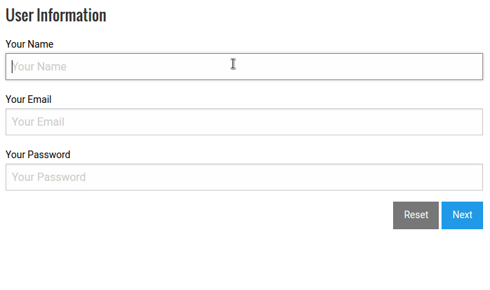

A package to validate maps of data extracted from HTML forms in the client and server sides and a customizable jQuery plugin to validate forms as you type with ease.
See JavaScript API and SASS configuration.
<form>
<div class="row">
<label for="email">Your Email</label>
<input id="email" name="email" type="email"
data-vv-display="#email-msgs">
<div id="email-msgs"></div>
</div>
<div class="row">
<label for="pass">Your Password</label>
<input id="pass" name="pass" type="password"
data-vv-display="#pass-msgs">
<div id="pass-msgs"></div>
</div>
<div class="row">
<input type="submit">
<input type="reset">
</div>
</form>// The same configuration as the server
$('form').vulcanval({
disableHTML5Validation: true,
fields: [{
name: 'email',
required: true,
validators: {
isEmail: true,
isLength: { min: 4, max: 32 }
}
}, {
name: 'pass',
required: true,
validators: {
isAlphanumeric: true,
isLength: { min: 4, max: 32 }
}
}]
});
// later
const invalid = $('form').vulcanval('inspect');
if (invalid) {
// `invalid` is an object with all the invalid fields
// keys are the fields names and values its error messages
} else {
const dataMap = $('form').vulcanval('getMap');
// { email: 'anEmail@mail.com', pass: 'aPassword' }
// send it to the server...
}const vulcanval = require('vulcanval');
// The same configuration as the client
const vv = vulcanval({
disableHTML5Validation: true,
fields: [{
name: 'email',
required: true,
validators: {
isEmail: true,
isLength: { min: 4, max: 32 }
}
}, {
name: 'pass',
required: true,
validators: {
isAlphanumeric: true,
isLength: { min: 4, max: 32 }
}
}]
});
// Gotten from the client:
const dataMap = { email: 'anEmail@mail.com', pass: 'aPassword' };
const invalid = vv.validate(dataMap);
if (invalid) {
// `invalid` is an object with all the invalid fields
// keys are the fields names and values its error messages
} else {
// we are free to go :)
}To install with NPM:
$ npm install --save vulcanvalTo use in Node:
const vulcanval = require('vulcanval');To use with Browserify or Webpack:
// The validator module:
const vulcanval = require('vulcanval');
// or
import vulcanval from 'vulcanval';
// And if you want to use the jQuery plugin:
require('vulcanval/bundle/js/jquery');
// If you want to use the plugin with jQuery from module bundler (not global):
require('vulcanval/bundle/js/jquery/intern');VulcanVal has a peer dependency on validator.js and in client-side the plugin requires jQuery so make sure you install them first.
$ npm install --save validator jqueryTo install the styles for the jQuery plugin with SASS, include the following import path in the SASS compiler:
./node_modules/vulcanval/src/scss/jqueryAnd import in your SASS code:
@import 'vulcanval-jquery';You can use bower to install VulcanVal too:
$ bower install --save vulcanvalAnd you will have your files at:
<BOWER_FOLDER>/vulcanval/dist/vulcanval.min.js<BOWER_FOLDER>/vulcanval/dist/vulcanval-jquery.min.js<BOWER_FOLDER>/vulcanval/dist/vulcanval-jquery.min.cssvulcanval.min.js file will contain the validator.js v6.x included.
You can download the latest browser built files version 3.x with validator.js version 6.x included at:
And install them directly on your site before using the package and the plugin after importing jQuery (when using the plugin).
To Chris O’Hara and everyone who contributed to validator.js which this project relies on for raw validations.